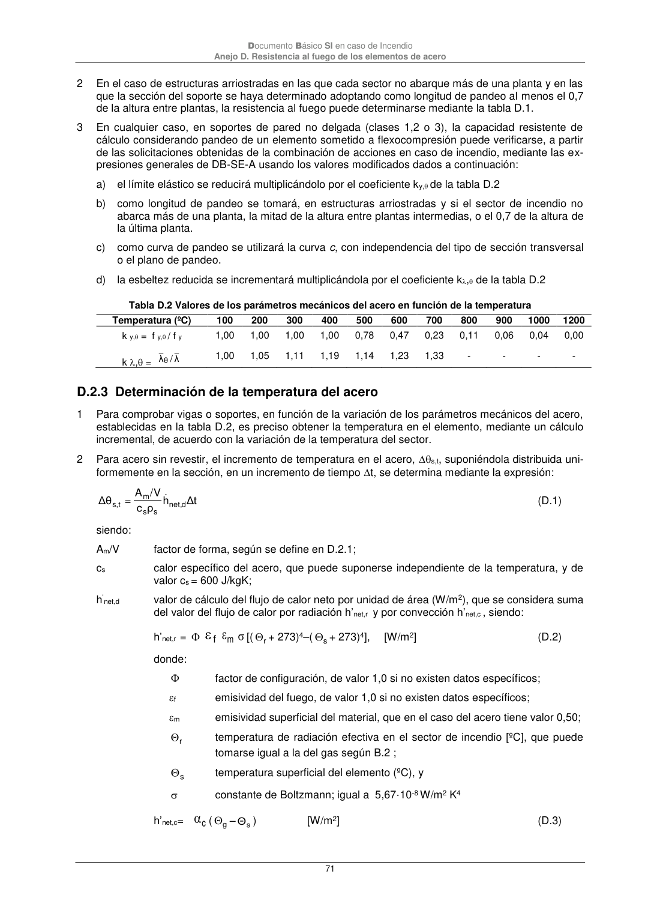

DB-SI Seguridad en caso de incendio · edición 2025-03-04 · capa oficial
Documento DB-SI-oficial · SHA-256 del PDF 0a2e78cd62471d9cc5cfe2efbc6aa39fdbad73c124aea7b039f9de96c141e105
Copia fiel del PDF fuente · Fuente oficial
Ficha de la disposición en la fuente oficial
Formatos: JSON del segmento · Markdown
D.2.3 Determinación de la temperatura del acero 1 Para comprobar vigas o soportes, en función de la variación de los parámetros mecánicos del acero, establecidas en la tabla D.2, es preciso obtener la temperatura en el elemento, mediante un cálculo incremental, de acuerdo con la variación de la temperatura del sector. 2 Para acero sin revestir, el incremento de temperatura en el acero, s,t, suponiéndola distribuida uni- formemente en la sección, en un incremento de tiempo t, se determina mediante la expresión: Δt h ρ c /V A = Δθ d net, s s m s,t (D.1) siendo: Am/V factor de forma, según se define en D.2.1; cs calor específico del acero, que puede suponerse independiente de la temperatura, y de valor cs= 600 J/kgK; h’net,d valor de cálculo del flujo de calor neto por unidad de área (W/m2), que se considera suma del valor del flujo de calor por radiación h’net,r y por convección h’net,c , siendo: h’net,r =
